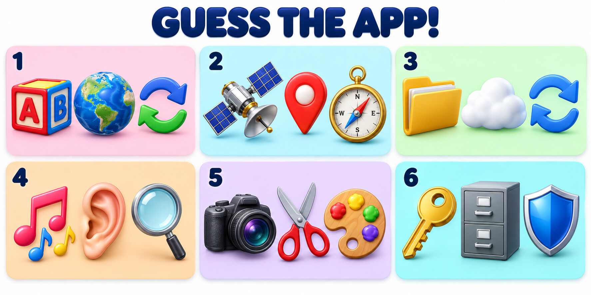

🎮 Guess the App!
Work in teams of 3–4. Look at the six emoji clues below. Guess the app or type of app, then explain what it helps people do.

🧩 How to play
- Study all six clues for one minute.
- Discuss your ideas with your team and agree on an answer for each number.
- Choose one clue and explain why your team chose that answer.
💬 Useful phrases
- I think number ___ is ___ because ___.
- Maybe it is an app for ___.
- It might help users to ___.
- Our team agrees because ___.
- We have a different idea: ___.
🔑 Keywords
translate — change words into another language · location — where a person or place is · cloud storage — saving files online · synchronise — keep the same information updated on different devices · recognise a song — identify music by listening · edit a photo — change a picture · password manager — an app that stores passwords securely
✅ Answer key
- Translation app (for example, Google Translate)
- Maps or navigation app (for example, Google Maps)
- Cloud storage app (for example, Google Drive, Dropbox, or OneDrive)
- Music recognition app (for example, Shazam)
- Photo-editing app (for example, Snapseed or Picsart)
- Password manager or security app (for example, Bitwarden or 1Password)